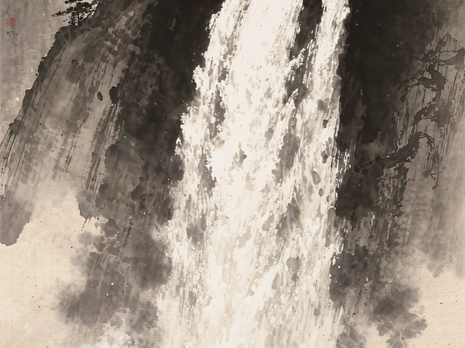

INDIE MAKER — ENTERTAINMENT
好きなエンタメの、楽しみ方のほうをつくっています。読書、水墨画、ラジオ、サッカー。ひとりで企画して、つくって、運用まで続けているものを並べました。
つくるより、続けるほうが難しい。だから設計の種明かしと、うまくいかなかったときの数字のほうをよく書きます。

水墨画が、ゆっくり動きつづける。眺めるためだけのアプリ。買い切り、広告なし、通知なし。
読んで線を引いた言葉を、しまっておく場所。静かに使える読書アプリ。
中学からの同級生と、30代の仕事・お金・暮らしをゆるく話しています。75回配信中。
Jリーグを観に行く人のための、実用の観戦ガイド。全国のスタジアムを取材と実測で。
迷いやすいところに、根拠のある道しるべを。
訪日旅行者向けの実用ツール群。こちらは英語のみ。